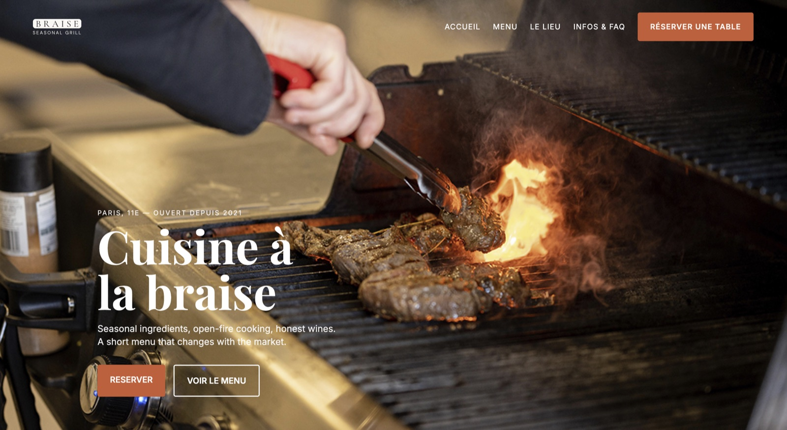

Braise
Site vitrine dynamique de restaurant avec système de réservation backend
Contexte & Objectif
Braise est le site web complet d'un restaurant. L'objectif de ce projet était de dépasser la simple intégration visuelle en ajoutant de véritables fonctionnalités interactives et de la communication avec un serveur.
Le site propose une carte interactive permettant de filtrer facilement les plats (entrées, plats principaux, boissons), ainsi qu'un système de réservation fonctionnel qui traite les données du client et lui envoie une confirmation par e-mail de manière automatisée.
Besoin technique : Créer une interface fluide (HTML/CSS/JS) couplée à un Back-End en PHP pour le traitement sécurisé des formulaires.
Stack Technique
Démo & Déploiement

Challenges Techniques Rencontrés
-
Traitement du Formulaire et Envoi d'E-mail
Défi : Récupérer les données de réservation saisies par l'utilisateur (nom, date, nombre de personnes), les valider côté serveur, et envoyer un e-mail de confirmation automatique sans utiliser d'API externe payante.
Solution : J'ai développé un script PHP qui récupère les données via la méthodePOST. J'ai mis en place des vérifications pour éviter les champs vides ou les failles basiques, puis j'ai configuré la fonction nativemail()de PHP (avec les bons headers) pour expédier la confirmation directement dans la boîte de réception du client. -
Filtrage Dynamique de la Carte
Défi : Permettre aux utilisateurs de trier le menu (Entrées, Plats, Boissons) de manière instantanée, sans avoir à recharger la page web à chaque clic.
Solution : J'ai utilisé JavaScript pour écouter les clics sur les boutons de catégories. En associant des attributs de données (ex:data-category) aux éléments HTML du menu, le script masque ou affiche dynamiquement les bons plats en modifiant leurs classes CSS en temps réel.
Rétrospective Personnelle
Ce que j'ai appris :
- Bases du Back-End : Comprendre le cycle requête/réponse HTTP et la communication entre le Front-End (formulaire) et le serveur (PHP).
- Manipulation du DOM : Création d'une interface réactive avec JavaScript pour améliorer l'expérience utilisateur (UX) sur la lecture du menu.
- Fiabilité des données : Apprentissage de l'importance de sécuriser et de vérifier les entrées utilisateurs avant de les traiter ou d'envoyer un e-mail.